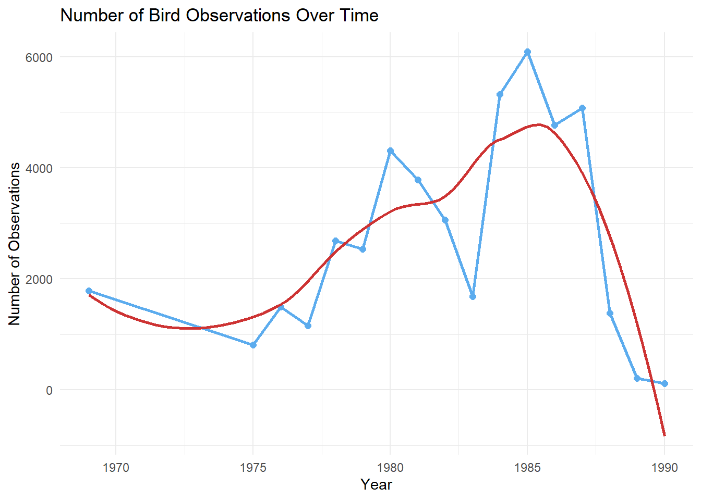
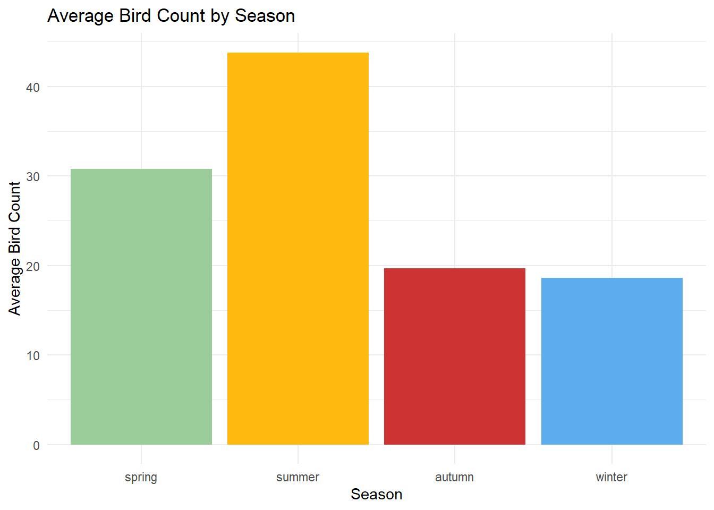
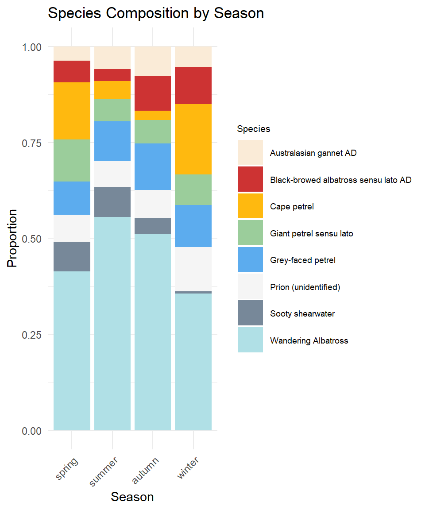
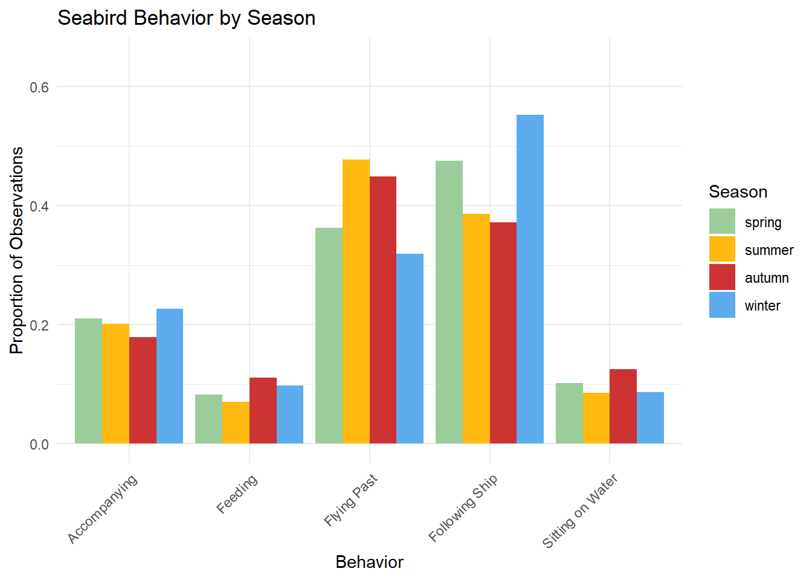
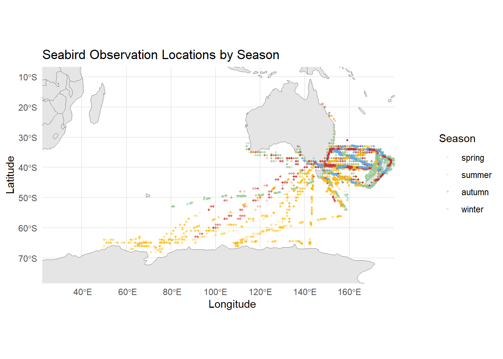
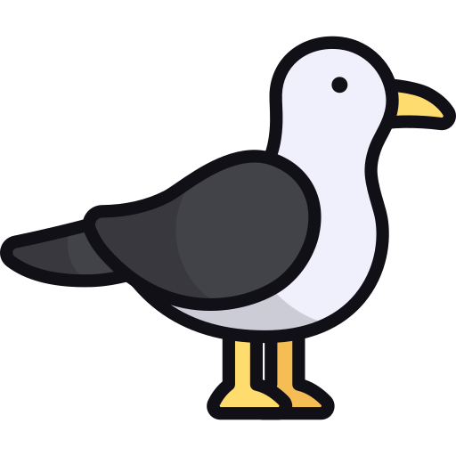

library(tidyverse) # data import, wrangling, and visualization
library(lubridate) # working with date variable
library(rnaturalearth) # base map layers for geographic plot
library(rnaturalearthdata) # country boundary data for mapping
library(sf) # for working with naturalearthdataBirds at Sea: Uncovering Seasonal Patterns in New Zealand’s Seabird Activity
Introduction
Seabirds are among the most widely traveled animals on earth, migrating thousands of miles across the open ocean each year. Because of their wide range, which spans continents and oceans, they are an integral part of many marine ecosystems. As ship traffic continues to increase in the southern ocean, understanding how seabirds use these waters across different seasons becomes increasingly important for conservation efforts. Using historical logbook data collected near New Zealand between 1969 and 1990, this analysis explores how season influences which seabird species appear and how they behave. Understanding these seasonal patterns can help ecologists and fisheries managers work together to identify when and where birds are most concentrated, and therefore most vulnerable to disturbance from ship traffic and fishing activity.
These factors were explored using the dataset Bird Sightings at Sea, collected by Te Papa Tongarewa, The Museum of New Zealand. The dataset consists of hand-recorded logbook entries documenting bird sightings during 10-minute observation periods from ships at sea. The data includes information about the birds observed, such as species name and behavior, as well as data about ships and their locations. The data was imported and analyzed using R and the tidyverse package. The bird and ship datasets were cleaned, subsetted, and joined to create a single dataset to be used for this analysis. Observations with missing values and erroneous counts were then removed. Exploratory visualizations including line charts, bar charts, and maps were then created to examine seabird species composition and behavior across seasons.
The findings of this analysis can be used to inform conservation groups and fisheries managers on how to best protect migratory seabirds as ship activity in the region grows. By identifying which species are most prevalent in each season, conservationists can develop targeted plans to protect their critical nesting habitats and migratory pathways. By tracking behavioral patterns across seasons, scientists can begin to assess whether ship activity influences natural bird behavior.
Packages Required
Data Preparation
birds <- read_csv('https://raw.githubusercontent.com/rfordatascience/tidytuesday/main/data/2026/2026-04-14/birds.csv')Warning: One or more parsing issues, call `problems()` on your data frame for details,
e.g.:
dat <- vroom(...)
problems(dat)ships <- read_csv('https://raw.githubusercontent.com/rfordatascience/tidytuesday/main/data/2026/2026-04-14/ships.csv')For this analysis, two datasets were imported from the larger Bird Sightings at Sea collection. The birds dataset originally contained 26 variables and the ship dataset contained 21 variables. Rather than including all the available variables, each dataset was subsetted to include only those relevant to the research question.
The variables from the bird dataset used in this analysis were:
| Variable | Description |
|---|---|
| record_id | links each bird observation to a corresponding ship record |
| species_common_name | the common name of the observed species |
| count | the total number of birds observed during the 10-minute period |
| feeding | behavioral variable, birds observed feeding |
| following_ship | behavioral variable, birds observed following ships wake |
| accompanying | behavioral variable, birds observed flying along side the ship |
| flying_past | behavioral variable, birds observed flying past the ship |
| sitting_on_water | behavioral variable, birds observed sitting on water |
To determine which behavior variables from the birds dataset to include, the proportion of observations that included each behavior was calculated separately across the full dataset. Behaviors that occurred in fewer than 1% of the observations were excluded from the comparisons. This included sitting on ice (0.1%), sitting on the ship (0.3%), being held in hand (0.01%), and naturally feeding (3.5%). The moulting variable was also excluded from this analysis, as it accounted for a disproportionate amount (73%) of the observations, which could possibly reflect issues in the data recording, rather than truly observed behavior.
# calculate proportion of observations for each behavior
birds |> summarise(
pct_sitting_water = mean(sitting_on_water, na.rm = TRUE),
pct_sitting_ice = mean(sitting_on_ice, na.rm = TRUE),
pct_sitting_ship = mean(sitting_on_ship, na.rm = TRUE),
pct_in_hand = mean(in_hand, na.rm = TRUE),
pct_flying_past = mean(flying_past, na.rm = TRUE),
pct_accompanying = mean(accompanying, na.rm = TRUE),
pct_following_ship = mean(following_ship, na.rm = TRUE),
pct_moulting = mean(moulting, na.rm = TRUE),
pct_naturally_feeding = mean(naturally_feeding, na.rm = TRUE),
pct_feeding = mean(feeding, na.rm = TRUE)
)# A tibble: 1 × 10
pct_sitting_water pct_sitting_ice pct_sitting_ship pct_in_hand pct_flying_past
<dbl> <dbl> <dbl> <dbl> <dbl>
1 0.124 0.00147 0.00308 0.000108 0.420
# ℹ 5 more variables: pct_accompanying <dbl>, pct_following_ship <dbl>,
# pct_moulting <dbl>, pct_naturally_feeding <dbl>, pct_feeding <dbl>The variables from the ships dataset used in this analysis were:
| Variable | Description |
|---|---|
| record_id | links each ship record to a corresponding bird observation |
| date | date observation occurred |
| season | season observation occurred in, based on Southern hemisphere season: “spring”, “summer”, “winter”, “autumn” |
| latitude | latitude observation occurred at |
| longitude | longitude observation occurred at |
Both datasets were then subsetted to retain only the variables relevant to this analysis and joined using their shared identifier record_id. One observation (record_id 1184009) was automatically dropped during the join as it had no corresponding ship record.
# subset each dataset to only include necessary variables
birds_clean <- birds |>
select(record_id, species_common_name, count, feeding, following_ship,
accompanying, flying_past, sitting_on_water)
ships_clean <- ships |>
select(record_id, season, date, latitude, longitude)# join datasets
bird_data <- birds_clean |>
left_join(ships_clean, by = "record_id")The count variable contained multiple values of 99999, used to represent estimated counts of over 100,000 birds. These values were removed as they do not represent true counts and could skew any averages. Observations missing a season value were also removed, as season was the primary variable used for comparison in this analysis. After cleaning, the dataset contained 46,314 observations.
# filter to remove NA and erroneous values
bird_data <- bird_data |>
filter(count != 99999) |>
filter (!is.na(season))The species_common_name variable recorded wandering albatross sightings across four separate plumage phases (PL1 through PL4). Since these represent the same species at different life stages, they were combined into a single category. The dataset was then further subsetted to include only the top 8 most commonly observed species, removing rarer species that would not contribute meaningfully to a seasonal comparison.
# combine wandering albatross plumage phases
bird_data <- bird_data |>
mutate(species_common_name = case_when(
str_detect(species_common_name, "Wandering albatross") ~ "Wandering Albatross",
TRUE ~ species_common_name
))# slice top 8 most abundant species
top_8_species <- bird_data |>
count(species_common_name, sort = TRUE) |>
slice_head(n=8) |>
pull(species_common_name)
top_8_species[1] "Wandering Albatross"
[2] "Cape petrel"
[3] "Grey-faced petrel"
[4] "Giant petrel sensu lato"
[5] "Prion (unidentified)"
[6] "Black-browed albatross sensu lato AD"
[7] "Sooty shearwater"
[8] "Australasian gannet AD" The final dataset, bird_data, contained 12 variables. The first 20 rows are shown below.
# print first 20 rows of final dataset
bird_data |>
slice_head(n = 20)# A tibble: 20 × 12
record_id species_common_name count feeding following_ship accompanying
<dbl> <chr> <dbl> <lgl> <lgl> <lgl>
1 1083001 Wandering Albatross 6 FALSE FALSE TRUE
2 1083001 Black-browed albatross s… 2 FALSE FALSE TRUE
3 1083001 Cape petrel 8 FALSE FALSE TRUE
4 1083001 Fairy prion 2 FALSE FALSE TRUE
5 1083001 Sooty shearwater 4 FALSE FALSE TRUE
6 1084001 Royal albatross sensu la… 10 FALSE TRUE FALSE
7 1084001 Black-browed albatross s… 2 FALSE TRUE FALSE
8 1084001 Sooty shearwater 18 TRUE FALSE TRUE
9 1084002 Royal albatross sensu la… 10 FALSE TRUE FALSE
10 1084002 Black-browed albatross s… 2 FALSE TRUE FALSE
11 1084002 Cape petrel 2 NA NA NA
12 1084002 Prion (unidentified) 2 FALSE FALSE TRUE
13 1084002 Sooty shearwater 8 TRUE TRUE FALSE
14 1084002 Seabird (Unidentified) 1 FALSE TRUE FALSE
15 1084003 Royal albatross sensu la… 14 FALSE TRUE FALSE
16 1084003 Black-browed albatross s… 4 FALSE TRUE FALSE
17 1084003 Giant petrel sensu lato 3 FALSE TRUE FALSE
18 1084003 Cape petrel 8 FALSE FALSE TRUE
19 1084003 Fairy prion 18 TRUE FALSE TRUE
20 1086001 Fairy prion 6 FALSE FALSE TRUE
# ℹ 6 more variables: flying_past <lgl>, sitting_on_water <lgl>, season <chr>,
# date <date>, latitude <dbl>, longitude <dbl>A second dataset, behavior_by_season, was created to summarize behavioral patterns across seasons. The proportion of observations where each behavior occurred was calculated for each season using summarise, and the resulting data was then reshaped using pivot_longer to convert the five behavior columns into a single column of behavior names with a corresponding proportion column. This format makes it easier to plot and compare behaviors across seasons.
# create separate dataset showing proportion of behavirs by season
behavior_by_season <- bird_data |>
group_by(season) |> # group behaviors by season
# calculate proportion of each behavior
summarise(
feeding = mean(feeding, na.rm = TRUE),
following_ship = mean(following_ship, na.rm = TRUE),
accompanying = mean(accompanying, na.rm = TRUE),
flying_past = mean(flying_past, na.rm = TRUE),
sitting_on_water = mean(sitting_on_water, na.rm = TRUE)
) |>
mutate(season = fct_relevel(season, "spring", "summer", "autumn", "winter")) |>
pivot_longer(
cols = -season, # keep all variables besides season
names_to = "behavior", # move column names to new variable
values_to = "proportion" # move values to new variable
)Exploratory Data Analysis
# plot count of observations by year
bird_data |>
mutate(year = year(date)) |>
count(year) |>
ggplot(aes(x = year, y = n)) +
geom_line(color = "steelblue2", linewidth = 1) +
geom_point(color = "steelblue2", size = 2) +
geom_smooth(color = "brown3", se = FALSE) +
labs(
title = "Number of Bird Observations Over Time",
x = "Year",
y = "Number of Observations"
) +
theme_minimal()
Before examining seasonal patterns, it is important to understand when the data was collected. The line chart of observations per year reveals that the data collection was not consistent across the entire 1969-1990 time period. After the initial observations were collected in 1969 there is a gap in the record until 1975. Observations then increased steadily, peaking around 1984-1985, before dropping sharply starting in 1987.
#plot average bird count by season
bird_data |>
group_by(season) |>
summarise(avg_count = mean(count, na.rm = TRUE)) |> # calculate average number of birds per observation
mutate(season = fct_relevel(season, "spring", "summer", "autumn", "winter")) |>
ggplot(aes(x = season, y = avg_count, fill = season)) +
geom_col() +
scale_fill_manual(values = c(
"spring" = "darkseagreen3",
"winter" = "steelblue2",
"autumn" = "brown3",
"summer" = "darkgoldenrod1"
))+
labs(title = "Average Bird Count by Season",
x = "Season",
y = "Average Bird Count",
fill = "Season"
)+
theme_minimal()+
theme(legend.position = "none")
The average number of birds observed per 10-minute observation period was highest in summer, with an average of approximately 44 birds per observation, compared to around 20 birds in both autumn and winter. Spring had intermediate counts of around 31 birds per observation. This seasonal pattern suggests that seabirds are most abundant in the waters near New Zealand during the warmer months, consistent with known southern hemisphere migratory patterns where many species migrate to these waters in the summer in order to breed.
#create plot of species by season
bird_data |>
filter(species_common_name %in% top_8_species) |> # only include top 8 species
group_by(season, species_common_name) |>
count(season, species_common_name) |>
mutate(season = factor(season, levels = c("spring", "summer", "autumn", "winter"))) |>
ggplot(aes(x = season, y = n, fill = species_common_name)) +
geom_col(position = "fill") +
scale_fill_manual(values = c("antiquewhite","brown3","darkgoldenrod1","darkseagreen3","steelblue2","whitesmoke","lightslategray", "powderblue"))+
labs(
title = "Species Composition by Season",
x = "Season",
y = "Proportion",
fill = "Species"
)+ theme_minimal()+
theme(axis.text.x = element_text(angle = 45, hjust = 1),
legend.key.size = unit(0.8, "cm"),
legend.text = element_text(size = 7),
legend.title = element_text(size = 8))
The wandering albatross was by far the most commonly observed species, making up over 50% of the observations in summer and autumn.However, there is a noticeable shift across seasons. In the spring and winter, its proportion decreases and other species become more prevalent, including the cape-petrel, grey-faced petrel, and giant petrel. These seasonal changes in species composition suggests that different species migrate to these waters at different times of year, demonstrating the importance of using conservation strategies specific to each season.
# create plot of behaviors by season
behavior_by_season |>
# rename behaviors
mutate(behavior = recode(behavior,
"feeding" = "Feeding",
"following_ship" = "Following Ship",
"accompanying" = "Accompanying",
"flying_past" = "Flying Past",
"sitting_on_water" = "Sitting on Water")) |>
ggplot(aes(x = behavior, y = proportion, fill = season)) +
geom_col(position = "dodge") +
# set fill colors
scale_fill_manual(values = c(
"spring" = "darkseagreen3",
"winter" = "steelblue2",
"autumn" = "brown3",
"summer" = "darkgoldenrod1"))+
# resize plot
coord_cartesian(ylim = c(0, 0.65))+
# add labels
labs(
title = "Seabird Behavior by Season",
x = "Behavior",
y = "Proportion of Observations",
fill = "Season"
)+
theme_minimal() 
Seabird behavior also varied notably across seasons. Birds were most likely yo follow or accompany ships during the winter, with around 55% of winter observations showing birds following the ship’s wake. In contrast, flying past was more common in summer and autumn, suggesting birds are less reliant on ships during warmer months, when food may be more readily available. These patterns make biological sense as birds may be more likely to opportunistically seek out ships for food and shelter in colder months when the may be less readily available. Ships operating in these waters during winter months should be aware that their presence may be attracting and disrubting the natural behavior of seabirds.
# load world data at small scale to reduce rendering time
world <- ne_countries(scale = "small", returnclass = "sf")
ggplot() +
# add base layer with world map
geom_sf(data = world, fill = "gray90", color = "gray50") +
# filter out observations missing location or season data
geom_point(
data = bird_data |>
filter(!is.na(latitude), !is.na(longitude), !is.na(season)) |>
mutate(season = factor(season, levels = c("spring", "summer", "autumn", "winter"))),
aes(x = longitude, y = latitude, color = season),
alpha = 0.2, size = 0.8
) +
# zoom map to specific region
coord_sf(xlim = c(30, 185), ylim = c(-75, -10)) +
# set fill colors
scale_color_manual(values = c(
"spring" = "darkseagreen3",
"summer" = "darkgoldenrod1",
"autumn" = "brown3",
"winter" = "steelblue2"
)) +
labs(
title = "Seabird Observation Locations by Season",
x = "Longitude",
y = "Latitude",
color = "Season"
) +
theme_minimal()
The geographic distribution of observations reveals clear seasonal patterns in where ships encountered birds. Summer observations extend far south toward Antarctica, suggesting that ships traveled into more remote waters during the warmer months. In contrast, autumn, winter, and spring observations cluster more tightly around New Zealand and southern Australia, This geographic variation reinforces the seasonal findings from the earlier plots and highlights that the dataset captures a wide but uneven geographic range.
Summary
This analysis examined how season influences the abundance, species composition, and behavior of seabirds observed near New Zealand using historical logbook data collected between 1969 and 1990. The bird and ship datasets were cleaned, subsetted and joined to create a dataset, which was then explored through a series of visualizations.
The analysis revealed several notable seasonal patterns. First, seabird abundance was highest in the summer, with an average of 44 birds per observation compared to the lowest, which was 19 in the winter. Second, species composition shifted across seasons, with the wandering albatross being the highest in summer and autumn, while other species became relatively more common in the spring and winter. Third, bird behavior varied by season. Birds were most likely to follow or accompany ships in winter, while flying past was more common in summer, suggesting that birds interact more directly with ships when seeking shelter or food sources. These findings have practical implications for seabird conservation. Ships operating in New Zealand waters during winter months may encounter birds that are more likely to interact with vessels, increasing the risk of disturbing their natural behaviors and migratory patterns. Specific guidelines based on seasonality could help minimize these risks when birds are most active.
This analysis has several important limitations that should be mentioned. The data was collected over 20 years ago and may not reflect current bird populations or ship traffic patterns. The recorded observations were highly uneven across years, with the majority of records concentrated to a few years in the 1980s. Additionally, observations were only made from ships, meaning the dataset would not capture bird behaviors and populations observed from land. Air temperature data, which would have been useful for confirming the relationship between season and bird abundance, was missing for 41,517 out of 46,314 observations. Future research could address these limitations by collecting more consistent observations across a wider geographic area, adding observations from land, and connecting the bird sighting data with environmental factors such as temperature.
